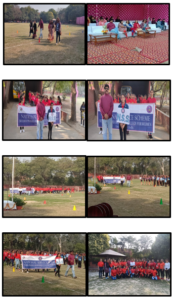

National Service Scheme: Report
Year : 2019-20

YOGA DAY CELEBRATION : [Date : 21st June 2019]
Shyama Prasad Mukherjee College for Women celebrates yoga day every year on 21st June. The main objective of this event was to promote the habit of meditation among youngsters. Also, this day yoga session was designed to provide maximum physical and intellectual benefits.
The NSS Unit of SPM College along with Sports Department decided to celebrate International Yoga Day on 21st June, 2019 by adopting Common Yoga Protocol (CYP), in a befitting manner, which consists of simple yoga practices. The yoga was enthusiastically held for three consecutive days, from 18th June to 20th June, each of two hours long.
On 21st June, the session started at 9:00 AM and ended at 11:00 AM. NSS Convenor Prof. Rajkumar Falwaria and several other teachers Dr. Prabha Rani, Dr. Anju Jain, Dr. Nirmal Tiwari, Dr. Swati Garg, all from Commerce Department and Sports teacher Dr. Kavita along with 100 NSS volunteers attended the session. The session was organized in Foyer to accommodate all of them. Dr. Nirmal Tiwari welcomed the Chief Guests Shri Vinod Sonkar (Member of Parliament) and Smt. Sunita Kangra (Mayor, West Delhi) with great joy.
The event was further taken up by Ms. Sonia who in her motivational and inspiring talk briefed the students about the importance of yoga. She instructed everyone to take their positions on their respective mats. With the vision to benefit students and teachers she started with her yoga training. With a systematic syllabus laid out for participants, starting from basics, incorporating Pranayama Asana, innovative practices like Partner yoga, Neuro yoga, Chair yoga, etc.
All the volunteers, staff teachers and chief guest availed the benefit of this opportunity provided by the college. The yoga instructors highlighted importance of mind, body and soul nourished through yoga. Various asanas like bridge pose, Tree pose, Camel pose, Low Lange, Warrior pose, swaying palm pose, Lotus pose, AdhoMukhaSwastikasana, Adho Mukha Virasana, Trikonasana and Set BandhaSarvangasana were performed by the students of Sports Department of our college. And its uses were told to all.
Regular practice of yoga will surely help everyone present in the event to achieve a better life. The program was concluded by proposing vote of thanks.
ADMISSION SESSION : [Date : 26th June – 20th July 2019]
Shyama Prasad Mukherji College for Women, University of Delhi was ready to welcome girls for their admission in various courses. Delhi University, one of the renowned Universities released its first cut off on 26th June 2019 and so the admission process too started in our college.
All the volunteers, nearly 50, gathered at 8:00 AM in college premises to make arrangements. A total of nearly 180 NSS volunteers made their efforts to make the process go smooth all days. The admission process started at 8:30 AM and usually went till 3:00 PM. Starting from the college gate till the completion of the whole admission process, the volunteers of NSS SPM Unit guided them on every step. NCC of SPM college too played an important role in guiding the students. Mrs. Jaya Gera (Computer Science Department) and Ms. Rajani Bala (B.A Programme Department) coordinated the whole admission process from first cut off to sixth cut off.
The students were given a token serial number who were piled up in ground accordingly. Then in sets of five students, they were sent to windows of office for document verification. Further, according to their course they were allotted room numbers where their eligibility was checked and forms were filled. The forms were further verified in staff room.
All the students who came for admission process were given whole information of the process. A help desk was set up near the Resource Room where both teachers and volunteers of NSS SPM unit solved their queries. Also, a bulletin board consisting of cut offs was established at various places in the college like at the main gate and near Resource Room. Students were informed about the documents that were required for their admissions and also about the cut offs.
The whole admission process went smoothly. Newly admitted students were seen happy and went off with a cheerful smile. The same process went throughout the six cut offs when teachers, NSS and NCC of SPM college were seen always ready to help the new comers.
PARILIAMENT VISIT : [Date : 16th & 23rd July 2019]
NSS Unit of Shyama Prasad Mukherjee College organized excursion trips to Parliament House. These trips were organized to give NSS volunteers a refreshing experience and also an example of how our political leaders serve the country by performing their duty in the Parliament. This would teach the volunteers to be systematic and patient in their service. In total, two trips were made in which, 50 volunteers visited the Parliament one at a time. NSS Convener Prof. Rajkumar Falwaria along with other Faculty members always accompanied the group.
The first Parliament visit was organized on 16th July from 1 PM onwards. The students got assembled at Central Secretariat Metro Station along with NSS Convener Prof. Rajkumar Falwaria, NSS Co-Convener Dr. Urmil Vats, and Dr. Priti Chahal (Political Science Department). From the metro station, the group walked towards the Parliament House. After advancing through six tight security checks, the group reached the Lok Sabha House and witnessed its proceedings from the visitor's area. The visiting time was for approximately fifteen minutes only.
After hearing a short brief of the session, the group while moving towards the exit paused to capture the moment near Mahatma Gandhi's Statue in the garden of the Parliament House. After the completion of this trip, the group took refreshment from a nearby shop. The second trip was all the same as the first one. Except in this trip, along with Prof. Raj Kumar Falwaria, Dr. Jagpal Singh from Political Science Department accompanied the group. The second trip was organized on 23rd July. The experience of witnessing a Parliament session live was very enriching and enlightening for the volunteers. It boosted their morale and filled them with a renewed energy.
RUN FOR UNITY : [Date : 31st October 2019]
Shyama Prasad Mukherji College for Women, University of Delhi, organized "RUN FOR UNITY" on 31st October 2019, to commemorate the birth anniversary of the First Home Minister and the "IRON MAN" of India, SardarVallabh Bhai Patel. Hundreds of students and several teaching and non-teaching staff of the college enthusiastically participated in it.
The event started at 11.30 AM in the Plaza area of college with an address by NSS Convener, Prof. Rajkumar Falwaria. In his short speech, he remembered Sardar Patel's legacy and commended his tenuous efforts in integrating over 566 princely states into the Union of India with his astute administrative abilities and iron will. He remarked that Sardar Patel was one of the founding fathers of India who was solely responsible for the unification of Modern India that earns him the title, 'Bismarck of India'. He reiterated that the young citizens and the staff of the college must ensure that the unity of the nation remains intact at all cost. Furthermore, he promised that college will organize several programs every year to mark his legacy.
Later, NSS Co-Convener, Dr. Urmil Vats also administered all the participants the oath to protect the integrity of India. After the pledge, the unity march proceeded from the Plaza area of the college and proceeded through the ground. Subsequently, the participants carried slogans to promote the idea of unity in diversity in nation.
The entire event was successfully organized by NSS SPM Unit. The whole event ended up visualizing great enthusiasm and energy among everyone. Hence, the motto to promote unity among college students was approved.
NSS ORIENTATION : [Date : 11th November 2019]
Shyama Prasad Mukherji College for Women, University of Delhi organized it's NSS Orientation on 11th November 2019, at 11.30 AM in the Seminar Hall 2. Every year, the orientation is organized to welcome the newly recruited office bearers (21 members in total) and the volunteers of NSS SPM Unit.
The Orientation was started off by Prof. Rajkumar Falwaria, by welcoming honorable Principal Dr. Sadhna Sharma and the whole NSS family. He expressed his gratitude and vision for the new NSS Office team by painting a picture of them now as a part of NSS SPM unit with discipline, cooperation, and with no space for maliciousness. He tried to handle the chaos created by students in the hall and made them memorize the motive of NSS SPM Unit.
Further the Orientation Program was made to move ahead when Dr. Sadhna Sharma, addressed the NSS students and the newly recruited office bearers. She owned every office bearer with a badge along with her blessings. After handing over the badges, she delivered a short speech highlighting different values of life which one need to opt in their life. She mentioned that a group of people from different backgrounds becomes team only when there is mutual understanding and a spirit of working together. She wishes good luck to everyone and brings a full stop to her speech by asking everyone to explore and revitalize all possible good deeds in their life. She wishes that everyone would learn more, aim high and become successful.
NSS Co-Convener, Dr. Urmil Vats took over the words of Dr. Sadhna Sharma. First of all, she welcomed the whole NSS SPM family. She also told about the importance of NSS. In the end she gathered vote of thanks and dispersed everyone.
BLOOD DONATION CAMP : [Date : 14th November 2019]
Shyama Prasad Mukherji College for Women, University of Delhi conducted a Blood Donation Camp in the college under National Service Scheme (NSS) in association with the HDFC Bank on 14th November 2019. The NSS SPM Unit planned and organized this event and to their surprise the response was huge. Many students voluntarily came up to donate their blood.
The HDFC Bank held the blood donation camp in the college to make students as well as teaching and non-teaching staff aware about various issues related to blood. NSS Convenor Prof. RajkumarFalwaria said, “We are happy to conduct such a drive in our college and we are quite surprised by the response of the students. We wish to conduct many such events in the college and also would make sure to conduct this camp every year in the college”. Our Principal Dr. Sadhna Sharma made her gracious presence by lacerating the ribbon. The event started at 10:00 AM and went up to 4:00 PM.
Refreshments were provided to the students who were part of the camp. The volunteers, nearly 10, took immense care to meet the requirements of students before and after donating the blood, so as to avoid any mishaps in the campus. The blood donors were given a gift, certificate along with their reference card of the HDFC Bank. The doctors along with their other members were guiding the students about various diseases related to blood. Many checkups for blood pressure were also conducted by the doctors.
The huge words and quotes on the posters had an impact on the students, attracted everyone and made their spirit strong to donate their blood. Even those who donated blood motivated their friends and classmates to donate blood.
The camp was organized in a much disciplined manner checking each and every aspect of our health. The camp ended with a number of 52 students who donated blood. Nearly 70 to 80 students were interested but failed to approach the eligibility criteria laid by the HDFC Bank. The whole event went to an end at 4:00 PM fulfilling the motto “EVERY BlOOD DONOR IS A LIFE SAVER”.
DELHI TRAFFIC POLICE WALKATHON : [Date : 11th January 2020]
The 31st Road Safety Week was observed from 11th January to 17th January 2020. With 356 million young people in the country, India has one of the youngest populations in an aging world. Unfortunately, we are unable to utilize the demographic dividend to its full potential as we are losing our manpower to hopeless road accidents. As per the WHO Global report, road accidents are recognized as the leading cause of deaths among the youth between the ages of 5-29 in India and worldwide. Taking this into consideration, the theme of this year was chosen to be, "Bringing Change Through Youth".
Delhi Traffic Police organized a Walkathon on the inaugural day of the National Road Safety week on 11th January 2020 at C- Hexagon India Gate. The walk began at 9:00 AM. The NSS Unit of Shyama Prasad Mukherjee College also participated in the walkathon along with other NSS Units from different colleges.
The objective of the walk was to promote road safety and make citizens aware of the traffic rules and their importance. 40 volunteers from our NSS Unit were part of the walk. College provided the transport to the venue of the walkathon. The volunteers gathered at 9:00 AM to recite slogans on road safety albeit “Save way subway, don’t jump red light, we want to save you”, “Sadak Suraksha, Jeevan Raksha” and more. Our unit in the walkathon was led by our NSS Convener Prof. Rajkumar Falwaria and NSS President Mansi.
The walkathon turned out to be an enthusiastic start to the national road safety week.
CLOTH DONATION DRIVE : [Date : 15th - 22nd January 2020]
Government statistics reveal that winters are the second major reason for deaths in India, after lightning. Floods come third on this list. Statistics show that till 2007, 826 people died every year due to harsh winters in India. The death toll started to increase after 2007 due to a drop in winter temperatures. Between 2002 and 2012, as many as 10,740 people died from exposure to cold and avalanche.
Every year, more than 200 people die in December itself. A report of the Centre for Holistic Development (CHD) revealed that in the month of December and January this year, 427 people have died due to extreme cold. Clearly, hundreds of winter deaths are considered “normal”, and there is hardly any effort to find the exact reason behind them.
To relieve unfortunate people from this cause, the NSS Unit of Shyama Prasad Mukherji College for Women organized a cloth donation drive starting from 15th January 2020 till 22nd January 2020. Cardboard boxes were set up in the area near the resource room for the students and staff to donate helpful and purposive things to those in need. The boxes were set up at 9:30 AM in the morning and the drive continued till 2 PM every day. At the end of the day, the things donated were collected, checked for any wear and tear and properly wrapped up for further delivery.
The donation drive was organized in collaboration with ‘We Clothe Them', an NGO seeking to empower the less privileged by giving them access to one of the basic needs of survival, i.e., clothing. It is an endeavor to bridge the unequal distribution of resources by collecting surplus clothes from the more privileged sections of society and directing them to people who really needs them through such collaborations.
The donation drive continued for a week and everyone participated enthusiastically. We had successfully collected clothes weighing up to 8 cardboard boxes. At the end of the drive, the donated items were packed in boxes and delivered to the NGO.
DENTAL CHECKUP CAMP : [Date : 23rd January 2020]
According to the draft National Oral Health Policy 2018, the prevalence and recurrence of oral diseases in India is a silent epidemic. There has next to no improvement in oral health status of Indian population in the past three decades.
Different oral conditions such as untreated caries of permanent teeth, untreated caries of deciduous teeth and severe periodontitis have a significant burden affecting 43.2 crores (32%), 11.2 crores (8.3%) and 18.1 crores (13.3%) people in India. Despite the scale of the problem, only 12.4% of adults have ever got their oral cavity examined by a dentist, the draft National Oral Health Policy 2018 notes.
The NSS Unit of Shyama Prasad Mukherji College for Women organized a free dental checkup for the students and staff of the college on 23rd January 2020 in collaboration with the Leo Club to ensure that everyone gets a good oral hygiene.
Doctors from Maulana Azad Institute of Medical Science volunteered in the camp giving free dental checkups and providing prescription to students. Close to 170 students attended the camp which started at 9 AM and continued till 4 PM in Foyer.
A registration desk was set up and NSS volunteers guided the students through the camp in order to maintain decorum. They ensured a smooth functioning by encouraging students over the campus to take dental hygiene seriously and participate actively.
A discussion on dental hygiene was held by the doctors to educate all about the importance of hygiene and regular dental checkup. The Principal, Dr. Sadhna Sharma cut the ribbon and addressed the members of Leo Club, the doctors and the volunteers. The camp successfully ended at 4 PM.
NSS MEETING : [Date : 22nd January 2020]
A meeting was organized in room 211 on 22nd January 2020, from 11:30 AM onwards to discuss upon the topics :
The meeting was held my NSS Convener Prof. Rajkumar Falwaria, Dr. Meenakshi Mawi (Political Science Department), Dr. Priti Chahal (Political Science Department) and members of Bharat Uday team.
The meeting started by giving a planter to the members from Bharat Uday, NGO. This was followed by the discussion of the future programs.
Students were encouraged to teach underprivileged children outside the college campus as a part of Each One, Teach One. This initiative is taken with the intention of each one of us contributing a little to bring about a major change in the lives of these children and in the society.
To help blind students in the college it was decided that at least 2 volunteers would assist them in their day. The volunteers would help them in activities such as issuing books from the library, arranging notes, academic help and any other form of assistance that they require.
Other topics discussed included the Add-On Course on Gandhi. The university is providing an Add-On course consisting of 8 classes on Gandhi. The importance of the same was discussed and students from all departments were encouraged to take it.
Voter's day celebration was also discussed. Students engaged in the discussion on voting rights and the significance of celebrating voter’s day.
In the end, Ms. Ayushi Rana from Bharat Uday NGO explained the need to give back to the society and motivated students to help the needy and understand the true meaning of happiness. Students also shared their past experiences of helping someone in need.
NATIONAL VOTER’S DAY CELEBRATION : [Date : 24th January 2020]
India celebrates this day on January 25 every year. The purpose of celebrating National Voters’ Day is to make the youth aware of voting. It is the right of every responsible citizen because each vote decides the fate of the new government and democracy. This year’s theme of National Voters’ Day was - ‘Electoral Literacy for Stronger Democracy’.
The Election Commission of India was established on January 25, 1950. The purpose of the Election Commission is to identify all eligible voters whose age has turned 18 on January 1 every year in all polling booth areas across the country. There is an age limit of 18 years for voting in India. Any Indian citizen of 18 years gets the right to vote in all kinds of democratic elections in India.
Shyama Prasad Mukherji College for Women under NSS organized National Voter's Day celebration on 24th January 2020 in the College Plaza. The event was organized to educate students on casting their votes and recall the importance of Indian Constitution.
Students and teachers were gathered at 11:30 AM. The Principal, Dr. Sadhna Sharma, addressed the crowd and said a few words about voter's right and Republic India. Following her, the Student's Union President Princy, shared her thoughts about the same and encouraged students to cast their vote. A beautiful song was sung by a few students on patriotism. A pledge of integrity was taken by everyone present.
SPORTS DAY : [Date : 20th February 2020]
A magnificent sports extravaganza was organized at Shyama Prasad Mukherji College for Women, Punjabi Bagh on 20th February, 2020 from 9:30 AM in which all the students from various courses as well as teachers participated with great fervor and manifested their athletic skills with an unimpeachable finesse.
The mega event commenced with the announcing of the arrival of respected dignitaries: The College Principal Dr Sadhna Sharma, Chief Guest Dr. Minakshi Pahuja (International Swimmer, Assistant Professor at LSR, DU), Guest of Honour Ms. Krishna (International Kho Kho Player) and Chairman GB Prof. Kavita Sharma from SPM College. The event proceeded with the March Past performed by a team of Kho Kho, Yoga, Aerobics, Eco Club, NSS, and NCC. The March past started from the Gazebo and ended in the middle of the ground. The NSS Unit was led by NSS Convener Prof. Rajkumar Falwaria and NSS President Mansi. The unit marched to display their team spirit and eagerness to serve whenever required.
This was followed by the lighting of the torch and the floral welcome of the Chief Guests. Dr Sadhna Sharma, hoisted the flag along with them. Also, she motivated everyone to be physically fit and promote yoga more and more. Chief Guest Dr. Minakshi Pahuja and Ms. Krishna also shared their life experiences and thanked the principal for inviting them.
Now, further the program was led by various sports competitions. The first sport activity was race of sports students. Relay Race was organized for Sports students which was really energetic. Next, a three-legged race was held for non-sports students. Other competitions included a race for blind students, a relay race and Matka race of female teachers, tug of war organized for male faculty and a volleyball match. Following this the chief guests also participated in the event by playing hockey.
All the matches were played with great enthusiasm and team spirit by everyone. After the competitions, award distribution took place wherein sports students were awarded for their excellent performance in sports.
The event ended with the vote of thanks given by Dr. Gagan Bakolia (Hindi Department) and Ms. Pooja.
